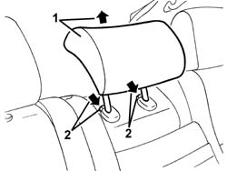
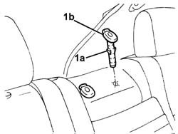

7050B30 rear seat central armest r r
- Path
- Procedures > 70 FITTINGS > 7050 REAR SEATS > 7050B rear seat head restraint/arm rest > 7050B30 rear seat central armest r r
- Kind
- repair procedure (removal / refitting; the operation number is the code)
- Applies to
- all engines; all production periods
- Interactive page
- https://sloeber94.github.io/elrnDB-a156/en/#/3238941
Applies to: all engines; all production periods; only with equipment: Station Wagon
 Removing
Removing
 Refitting
Refitting1. Raise the head restraint to the limit of its travel.
2. Press the retainers and remove the head restraint.

Applies to: all engines; all production periods; only with equipment: Station Wagon
1. If necessary, disengage the retainer (1a) and remove the head restraint tube (1b).

Applies to: all engines; all production periods; only with equipment: Station Wagon
Refitting
RemovingCheck that the head restraint is intact and shows no signs of damage.
If removed, place the tube in position and engage the retainer.
Reinsert the head restraint fully home in the tubes.
Press the retainers and insert the head restraint fully in the tubes.
Topics that link to this page (6)
- 7050A35 Backrest FRAME for (second row), side seat left or right - R.R.
- 7050A36 Backrest FAME for one centre (second row), seat left or right - R.R.
- 7050A43 ATTACHMENT/RELEASE DEVICE for one SPLIT rear seat BACKREST. -R.R.
- 7050A70 lh or rh device with cable (one) of one rear seat squab catch r r
- 7065B18 CENTRE REAR SEAT BELT - R.R.
- 7065B26 cable for attaching releasing rear central seat belt reel r r